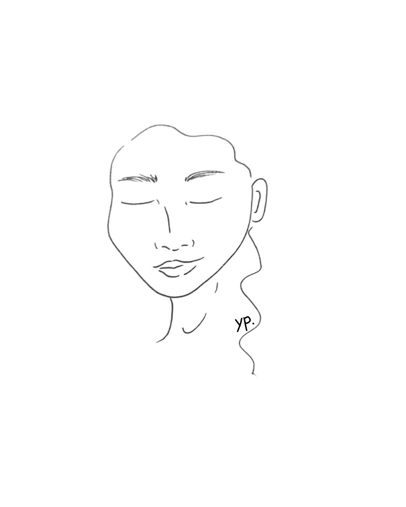

Tu sistema nervioso no distingue entre un depredador y una relación tóxica. Para él, ambos son una amenaza. Este test te ayuda a leer esas señales.
¿Dudas si estás en una relación abusiva?
¿Sufres acoso laboral?
¿Tu cuerpo no se siente a salvo en tus dinámicas familiares?
Haz el test para aportar claridad.
Tus respuestas no se guardan en ningún servidor.

Soy fisioterapeuta somática. Llevo años trabajando con cuerpos que guardan lo que la mente todavía no se permite saber.
Y lo sé también desde dentro. He vivido en mis propias carnes dinámicas que me hacían estar en alerta constante — secretos familiares, relaciones donde me empequeñecía para complacer a los demás, trabajos donde me acosaron mientras hacía un buen trabajo.
Nadie está libre de las dinámicas de poder en esta sociedad. Y yo, como fisioterapeuta, quiero acompañarte. Porque ni tú ni yo estamos solas en esta experiencia.
Analizando las señales somáticas
Estas zonas acumulan tensión fascial cuando el sistema nervioso percibe amenaza relacional.
Tu patrón sugiere una activación crónica del simpático con respuestas de congelación secundaria. El tono vagal aparece comprometido, lo que explica la fatiga post-contacto y la dificultad para...
Basado en tu mapa corporal, el protocolo incluye liberación del diafragma, activación del nervio vago, trabajo de suelo pélvico consciente y técnicas de...
Perfil del SNA, protocolo fascial personalizado y sesión 1:1 de fisioterapia somática.
Entender lo que pasa es el primer paso. Pero el cambio ocurre en el cuerpo, no solo en la mente. Por una parte está el trabajo relacional —la comunicación, los límites, el poder de decisión—. Y por otra está tu propio sistema nervioso: regularlo no es un lujo, es la base desde la que todo lo demás se puede hacer.
Acceder al Test 2 · Recursos y prácticas →Si el test gratuito ha resonado contigo y quieres ir más lejos, estos tests de pago incluyen análisis somático con IA, situaciones comparativas, herramientas prácticas y mucho más.
Tras el pago recibirás el enlace por email
Tras el pago recibirás el enlace por email
Tras el pago recibirás el enlace por email
Ilustraciones y guías en nuestra tienda
PDFs ilustrados, mensajes para momentos difíciles y guías somáticas descargables.
Ver tienda en Etsy →